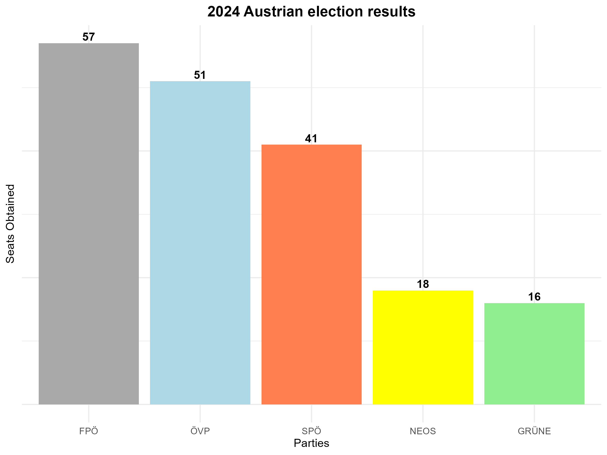

Situation Report 30th September 2024: Austrian Election Result and European Trends to the Far-Right
Key Takeaways
- Electoral Shift and Coalition Possibilities: The far-right Freedom Party (FPÖ) secured a significant 13% increase in the 2024 Austrian Federal Election, reaching 29.2% of the vote. However, despite winning the most seats, FPÖ cannot govern alone, potentially leading to either a FPÖ-ÖVP coalition or a center-left ÖVP-SPÖ alliance.
- European Implications: An FPÖ-led government, with Herbert Kickl as prime minister, could significantly influence EU policies, particularly on migration and support for Ukraine. Kickl’s critical stance on EU aid to Ukraine, coupled with his pro-Russian alignment, may affect EU unity on these issues.
- Immigration Policy Trend: The FPÖ's victory aligns with a broader European trend of stricter immigration policies, as seen with Germany's Schengen area border controls and the Dutch push to opt-out of EU immigration regulations, potentially complicating future EU-wide cooperation.
- Potential for Long-term Political Shifts: If FPÖ assumes power, Austria’s role in EU climate policy may be impacted, given Kickl’s opposition to the EU's Green Deal, referring to it as “climate communism.” Moreover, an FPÖ-ÖVP government could exacerbate anti-establishment sentiment, weakening centrist parties in the long term.
Background
The Freedom Party (FPÖ) won the Austrian Federal Election on Sunday, 29th of September 2024. The far-right party reached 29.2% of voters, gaining 58 out of 183 seats of the lower chamber of the Austrian Parliament. These results are a net 13% increase in votes from the 2019 elections.
The governing ÖVP (center-right) decreased to a historic low of 26.5% (52 seats), while the SPÖ (center-left) has reached 21% (41 votes). The other two parties that surpassed the 4% threshold and will have representation in the chamber are the Greens (Grüne) with 8% (15 seats) and the centrists-liberals of NEOS with 9% (17 seats).
The president of Austria, the former Greens leader Alexander Van Der Bellen, should appoint FPÖ's Herbert Kickl as prime minister. Still, the strong electoral result of the party does not allow it to govern by itself. The 92 seats needed could potentially be reached by an ÖVP-SPÖ governing alliance, depending on the willingness of the ÖVP to collaborate with the center-left instead of the far-right.
An FPÖ-ÖVP governing alliance was already in place between 2017 and 2019 under Chancellor Kurz but was terminated after the “Ibiza Affair,” a scandal involving the far-right leadership in a possible exchange of campaign money with a woman claiming to be a wealthy Russian citizen.

European Interests
The main issues at stake in an FPÖ government are migration policy and leniency towards Russia in the conflict with Ukraine.
The would-be prime minister Kickl has been critical of the EU's support for Ukraine, and an additional pro-Russian presence in the European Council, in tandem with Hungarian prime minister Orban, could majorly influence EU support for Ukraine.
The FPÖ victory inserts itself into a wider trend of tighter immigration policy across Europe, as seen in the recent introduction of Schengen area border control in Germany and the Dutch request to opt-out of the EU immigration policy. Immigration remains one of the most contentious topics within the EU and could hinder cooperation on other topics.
Looking Forward
- The Austrian President traditionally charges the leader of the winning party with the task of forming a government, but Van Der Bellen's personal animosity towards Kickl could change this custom.
- The SPÖ and ÖVP could arithmetically form a majority, but their economic agendas are extremely divergent. A stronger cordon sanitaire coalition that includes either Grüne or NEOS would strengthen the position of FPÖ as an anti-establishment party, becoming deleterious in the medium to long run.
- If FPÖ does end up in power, together with its support for Ukraine and immigration agenda, the EU could also be weakened regarding the Green Deal, as Austria was pivotal in recent discussions on key regulations, while Kickl has called the EU green agenda “climate communism.”